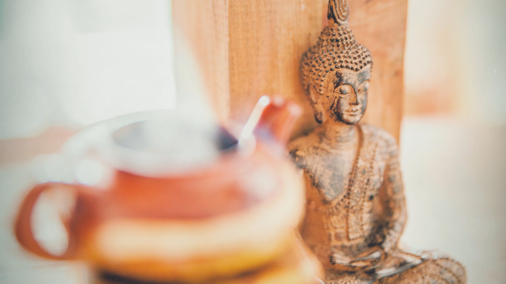

About Personal Peace Cafe
This cafe is imagined as a place where you can reconnect with yourself.
We welcome people of all faiths, cultures, and backgrounds. We hope you have a wonderful, peaceful time here.
For Korean-American Buddhists raised in the West, this space may provide a familiarity and help you feel more connected to Korean culture and heritage. For everyone else, in addition to the environment of calm and restfulness, we hope you enjoy learning more about Korean culture and Buddhism through exploring this space.
About This Website
The content of this website was inspired by a Personal Peace class that I am taking at University of Hawai'i at Mānoa. You can find out more about this class here. The design of this website was inspired by my visit to Mu-Ryang-Sa Temple 무량사 in Honolulu, Hawai'i. I wanted to try to incorporate in some of the aquamarines and teals, greens and blues, and multicolored accents. I attempted to incorporate in the red as well, but the website already had many colors, and the red ended up being too overpowering to the other colors. You can see pictures of Mu-Ryang-Sa on their website here.